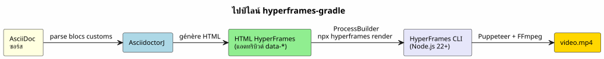

HyperFrames-Gradle : แปลง AsciiDoc เป็นวิดีโอ MP4
เผยแพร่เมื่อ 31 May 2026
เมื่อสองสัปดาห์ก่อน ฉันได้เปิดตัว`capsule-gradle`— ปลั๊กอินที่แปลงเด็ค reveal.js ในรูปแบบคลิปวิดีโอ WebM พร้อม TTS วันนี้ ฉันกำลังเพิ่มปลั๊กอินใหม่: hyperframes-gradle. มันทำสิ่งที่ capsule-gradle ไม่ทำ: แปลง AsciiDoc โดยตรง เป็นวิดีโอ MP4 โดยไม่ต้องผ่าน reveal.js
นี่คือเหตุผลว่าทำไมปลั๊กอินนี้จึงมีอยู่ และมันเชื่อมโยงกับสิ่งที่มีอยู่เดิมอย่างไร, และสิ่งที่เอนจิน HyperFrames ของ HeyGen นำมาสู่ไปป์ไลน์การผลิตเนื้อหา
ช่องโหว่ในไปป์ไลน์วิดีโอ
ไปป์ไลน์สารคดีของฉันผลิตวิดีโอสองประเภท:
-
แคปซูลทบทวน (capsule-gradle) — เด็ค reveal.js ที่บันทึกเป็น WebM ด้วย
การบรรยายด้วย TTS เหมาะอย่างยิ่งสำหรับการทบทวนโมดูล
-
สไลด์แอนิเมชัน (slider-gradle) — เด็ค reveal.js HTML แบบโต้ตอบสำหรับ
ผู้ฝึกอบรมแบบพบหน้า
แต่ยังขาดรูปแบบที่สาม: วิดีโอแบบสแตนด์อโลน
กรณีการใช้งาน |
โซลูชันปัจจุบัน |
ขาด |
สไลด์ผู้ฝึกสอน |
slider-gradle → reveal.js |
Please provide the French text you’d like me to translate into Thai. |
แคปซูลทบทวน |
capsule-gradle → WebM |
Please provide the French text you’d like me to translate into Thai. |
วิดีโอทีเซอร์ |
ไม่มี |
❌ |
การสาธิตทางเทคนิคแบบแอนิเมชัน |
ไม่มี |
❌ |
เอกสารเป็นวิดีโอ |
ไม่มี |
❌ |
กรณีการใช้งานแรกมีความสำคัญยิ่ง: จะสร้างโดยอัตโนมัติได้อย่างไร วิดีโอความยาว 60 วินาทีที่นำเสนอโครงการหรือโมดูล พร้อมแอนิเมชัน GSAP, การบรรยายด้วย TTS และเพลงประกอบ — ทั้งหมดจากไฟล์ AsciiDoc เดียวกัน แล้วสไลด์ล่ะ
Capsule-gradle ไม่สามารถตอบได้: เพราะจำเป็นต้องมีเด็ค reveal.js อยู่แล้ว slider-gradle ผลิตเด็คนี้ได้ดี แต่ไม่ได้ออกแบบมาสำหรับการเรนเดอร์วิดีโอ จำเป็นต้องมีไปป์ไลน์*โดยตรง*: AsciiDoc → วิดีโอ
HyperFrames : เครื่องยนต์
ฉันได้ค้นพบhttps://github.com/heygen-com/hyperframes[HyperFrames] il y a ไม่กี่วัน เป็นเฟรมเวิร์กโอเพนซอร์ส (Apache 2.0) ที่สร้างโดย HeyGen ยูนิคอร์นแห่งวิดีโอ AI 22,700 ดาวบน GitHub พิตช์สรุปได้ใน ประโยคหนึ่ง:
เขียน HTML เรนเดอร์วิดีโอ สร้างมาเพื่อเอเจนต์
หลักการ: คุณเขียน HTML ด้วย`data-*`แอตทริบิวต์, คุณอ้างอิง แอนิเมชัน GSAP (หรือ CSS, Lottie, Three.js…) และเอนจินเรนเดอร์ทั้งหมดเป็น MP4 ผ่าน Puppeteer (headless Chrome) + FFmpeg ผลลัพธ์ที่แน่นอน: อินพุตเดียวกัน, เฟรมเดียวกัน วิดีโอเดียวกัน
<div id="stage" data-composition-id="intro" data-start="0" data-width="1920" data-height="1080">
<video class="clip" data-start="0" data-duration="6" data-track-index="0"
src="background.mp4" muted playsinline></video>
<h1 id="title" class="clip" data-start="1" data-duration="4" data-track-index="1">
Formation Docker & Kubernetes
</h1>
<audio data-start="0" data-duration="6" data-track-index="2"
data-volume="0.3" src="music.wav"></audio>
<script src="https://cdn.jsdelivr.net/npm/gsap@3/dist/gsap.min.js"></script>
<script>
const tl = gsap.timeline({ paused: true });
tl.from("#title", { opacity: 0, y: 40, duration: 0.8 }, 1);
window.__timelines = window.__timelines || {};
window.__timelines.intro = tl;
</script>
</div>อะไรทำให้ HyperFrames แตกต่างจาก Remotion? ไม่มี React ไม่มี bundler ไม่มี JSX เป็น HTML ดิบที่เอเจนต์ AI เขียนได้เองโดยธรรมชาติ มันเหมาะ พอดีเป๊ะ กับไปป์ไลน์ของฉัน: planner-gradle กับ deepseek สามารถสร้าง HTML นี้จากแผน SPG/SPD และปลั๊กอิน Gradle สามารถแปลงเป็น MP4 ได้
สถาปัตยกรรมของปลั๊กอิน
hyperframes-gradle ใช้รูปแบบเดียวกันกับปลั๊กอินทั้งหมดของฉัน: รูปแบบ « Plugin แบบอิสระ + Root ผู้บริโภค ».
hyperframes-gradle/
├── settings.gradle.kts ← racine consommateur (dogfood)
├── build.gradle.kts ← 3 lignes : apply plugin hyperframes
├── hyperframes-plugin/ ← BUILD INDÉPENDANT
│ ├── gradlew ← son propre wrapper
│ ├── build.gradle.kts ← java-gradle-plugin
│ ├── src/main/kotlin/education/cccp/hyperframes/
│ │ ├── HyperframesPlugin.kt
│ │ ├── GenerateHyperframesHtmlTask.kt
│ │ ├── RenderHyperframesTask.kt
│ │ └── HyperframesExtension.kt
│ ├── .agents/ ← gouvernance agent
│ └── doc/
│ └── HYPERFRAMES_ARCHITECTURE.adoc
└── video.yml ← configuration dogfoodไปป์ไลน์สี่ขั้นตอน

-
AsciidoctorJ แยกวิเคราะห์ซอร์ส AsciiDoc และดึงบล็อกแบบกำหนดเองออกมา
[hyperframes-composition], [hyperframes-track], [hyperframes-animation].
-
GenerateHyperframesHtmlTask สร้าง HTML HyperFrames ด้วย
`data-*`แอตทริบิวต์ที่สอดคล้องกัน
-
RenderHyperframesTask เรียกใช้ HyperFrames CLI ผ่าน`ProcessBuilder`No source text was provided after the colon. Please send the French text to translate.
npx hyperframes render --input index.html --output video.mp4.
-
MP4 ถูกนำไปใช้งานใน`output/`กับ`metadata.json`สำหรับการออร์เคสเตรชัน
DSL ของ AsciiDoc
มูลค่าเพิ่มที่แท้จริงของปลั๊กอินคือ DSL AsciiDoc ผู้ใช้ ไม่เคยเขียน HTML เขาจะ annotate เอกสาร AsciiDoc ที่มีอยู่ของเขา:
= Formation Docker & Kubernetes
:hyperframes-width: 1920
:hyperframes-height: 1080
:hyperframes-fps: 30
[hyperframes-composition, id="intro"]
== Introduction
Le titre apparaît avec un fondu GSAP sur fond vidéo.
[hyperframes-track, index=0, start=0, duration=6]
video::assets/background.mp4[muted, playsinline]
[hyperframes-track, index=1, start=1, duration=4]
Formation Docker & Kubernetes
[hyperframes-animation, type=gsap]const tl = gsap.timeline({ paused: true }); tl.from("#title", { opacity: 0, y: 40, duration: 0.8 }, 1); window.timelines = window.timelines || {}; window.__timelines.intro = tl;
แอตทริบิวต์ docinfo (:hyperframes-width:) กำหนดค่าขนาด บล็อกแบบกำหนดเองกำหนดคอมโพสิชันและแทร็ก บล็อก `[hyperframes-animation]`มีโค้ด GSAP ดิบ — ที่เอเจนต์ AI สามารถสร้างจากคำอธิบายในภาษาธรรมชาติ
บริดจ์ Node.js
จุดที่เป็นอุปสรรคทางเทคนิคเพียงจุดเดียว: HyperFrames เป็น Node.js/TypeScript, และปลั๊กอินของฉันเป็น Kotlin/JVM วิธีแก้คือ`ProcessBuilder`Please provide the French text you’d like me to translate.
class RenderHyperframesTask : DefaultTask() {
@TaskAction
fun render() {
val process = ProcessBuilder(
"npx", "hyperframes", "render",
"--input", inputHtml.absolutePath,
"--output", outputMp4.absolutePath
)
.inheritIO()
.start()
val exitCode = process.waitFor()
require(exitCode == 0) {
"HyperFrames render failed with exit code $exitCode"
}
}
}โค้ด JVM ↔ Node.js ไม่มีการเชื่อมโยงกันเลย สัญญาคือผ่านบรรทัดคำสั่ง และไฟล์บนดิสก์ นี่เป็นแพตเทิร์นเดียวกับ`plantuml-gradle` (ซึ่งเรียกใช้ CLI PlantUML) หรือ`slider-gradle`(ซึ่งเรียก AsciidoctorJ) ไม่มีอะไรใหม่ภายใต้ดวงอาทิตย์ — เพียงแค่นำไปใช้กับเครื่องมือที่ใหม่กว่า
ปลั๊กอินวิดีโอสองตัว สองการใช้งาน
capsule-gradle |
hyperframes-gradle |
Please provide the French text you’d like me to translate into Thai. |
เด็ค reveal.js (HTML ที่มีอยู่) |
AsciiDoc → HTML HyperFrames |
กรณีการใช้งาน |
แคปซูลทบทวน |
วิดีโออธิบายแบบสแตนด์อโลน |
ธรรมชาติ |
สไลด์ → วิดีโอ |
เอกสาร → วิดีโอ |
ผลลัพธ์ |
Playwright Java → WebM |
HyperFrames CLI → MP4 |
แอนิเมชัน |
ทรานซิชันแบบเนทีฟของ reveal.js |
แอตทริบิวต์ข้อมูลของ GSAP/CSS |
สแต็ก |
100% JVM (Kotlin) |
JVM + Node.js CLI ภายนอก |
สิ่งเหล่านี้ไม่ได้แทนที่กันและกัน สิ่งเหล่านี้เสริมกัน ห่วงโซ่คุณค่าที่สมบูรณ์:
AsciiDoc ──→ slider-gradle ──→ deck reveal.js ──→ capsule-gradle ──→ WebM (แคปซูลทบทวน)
AsciiDoc ──→ hyperframes-gradle ──→ MP4 (วิดีโอแบบสแตนด์อโลน)
ผู้ใช้เขียนไฟล์ AsciiDoc เพียงไฟล์เดียว slider-gradle สร้างสไลด์ capsule-gradle ผลิตแคปซูลการแก้ไข hyperframes-gradle ผลิต วิดีโอทีเซอร์และเดโมทางเทคนิค
6 EPIC ของ Roadmap
ปลั๊กอินนี้มีโครงสร้างแบ่งออกเป็น 6 EPICs:
EPIC |
คำอธิบาย |
ลำดับความสำคัญ |
HF-0 |
การกำกับดูแล Bootstrap + การกำหนดกรอบสถาปัตยกรรม |
✅ เสร็จสิ้น |
HF-1 |
ปลั๊กอิน Gradle stub + การผสานรวม AsciidoctorJ |
P0 |
HF-2 |
บริดจ์ CLI HyperFrames (ProcessBuilder → npx → MP4) |
P1 |
HF-3 |
DSL AsciiDoc แบบกำหนดเอง (บล็อก, docinfo, เทมเพลต) |
P1 |
HF-4 |
การผสานรวม runner-gradle (metadata.json) |
P2 |
HF-5 |
เทมเพลตพร้อมใช้งาน (การ์ดชื่อ, ส่วนต่างโค้ด, คำบรรยาย) |
P3 |
HF-6 |
CI + การเผยแพร่ Maven Central / Gradle Portal |
P3 |
เซสชัน 000 (บูตสแตรป) เสร็จสิ้นแล้ว เซสชัน 001 จะโจมตี HF-1 : สตับของปลั๊กอิน Gradle และการผสานรวม AsciidoctorJ
ทำไมมันถึงได้ผล
สามเหตุผล:
-
HyperFrames ถูกสร้างมาเพื่อเอเจนต์ ไปป์ไลน์ของฉันพึ่งพาเอเจนต์ AI
(planner-gradle + deepseek) ที่สร้างเนื้อหา HyperFrames ยอมรับ… HTML ดิบ — รูปแบบที่ LLM เชี่ยวชาญที่สุด ไม่มี React ไม่มี ของ JSX ไม่มีเส้นโค้งการเรียนรู้สำหรับเอเจนต์
-
DSL ของ AsciiDoc เป็นธรรมชาติ ระบบนิเวศทั้งหมดของฉันพูด AsciiDoc
slider-gradle, codex-gradle, training-gradle — ทั้งหมดใช้`.adoc`. เพิ่มบล็อกแบบกำหนดเอง`[hyperframes-composition]`เป็นส่วนขยาย สมเหตุสมผล ไม่ใช่การแตกหัก
-
บริดจ์ Node.js เป็นแพตเทิร์นที่พิสูจน์แล้ว ProcessBuilder นอก JVM,
นี่คือสิ่งที่ฉันทำอยู่แล้วสำหรับ PlantUML, Graphviz, Piper เพิ่ม HyperFrames ไม่เปลี่ยนแปลงอะไรในสถาปัตยกรรม — มันเป็นเพียงเครื่องมือภายนอกอีกตัวหนึ่งเท่านั้น จัดการจาก Gradle
|
จุดแข็งที่แท้จริงของแพตเทิร์นนี้คือการที่มัน*ไม่มี* dependency ของ npm ใด ๆ ใน บิลด์ Gradle. ปลั๊กอินไม่ได้นำเข้าโค้ด Node.js. มันรัน คำสั่ง shell หาก HyperFrames มีการพัฒนาเปลี่ยนแปลงหรือเกิดปัญหา ปลั๊กอินจะไม่ถูกผูกเชื่อมโยงกัน — แค่อัปเดตคำสั่งก็พอ |
บทสรุป: จุดเชื่อมที่หายไป
ด้วย hyperframes-gradle ไปป์ไลน์วิดีโอของฉันสมบูรณ์แล้ว ฉันมี:
-
สไลด์แบบอินเทอร์แอกทีฟ (slider-gradle)
-
แคปซูลการทบทวน (capsule-gradle)
-
วิดีโอแบบสแตนด์อโลน (hyperframes-gradle)
สามรูปแบบ ไฟล์ต้นฉบับเดียว: AsciiDoc
เป้าหมายถัดไปคือ HF-1 : ทำให้ปลั๊กอินคอมไพล์และสร้าง HyperFrames HTML แรกจากเอกสาร AsciiDoc ที่มีคำอธิบายประกอบ เซสชัน 001 ถูกจัดกรอบไว้แล้ว
hyperframes-gradle มีอยู่แล้ว การกำกับดูแลพร้อมแล้ว แบ็กлог เขียนเสร็จแล้ว สถาปัตยกรรมได้รับการจัดทำเอกสารแล้ว ปลั๊กอินถือกำเนิดขึ้นแล้ว
เอกสารอ้างอิง
-
foundry/public/hyperframes-gradle/hyperframes-plugin/doc/HYPERFRAMES_ARCHITECTURE.adoc— สถาปัตยกรรมโดยละเอียด